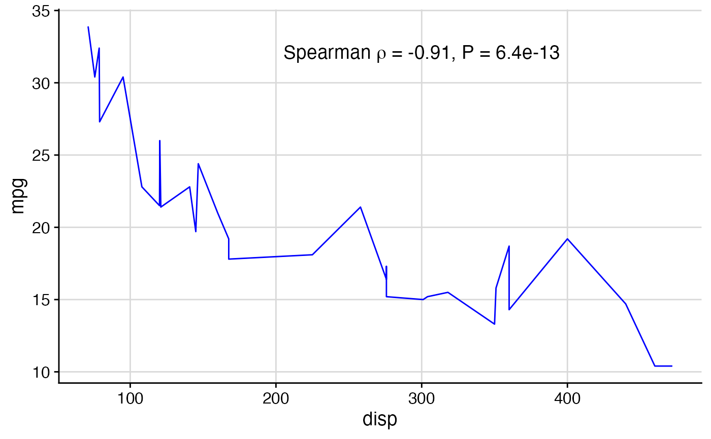
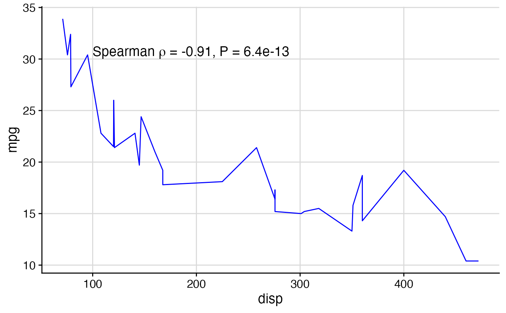
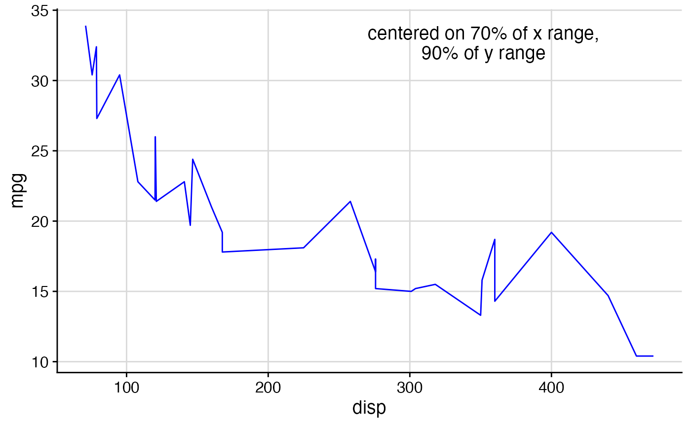
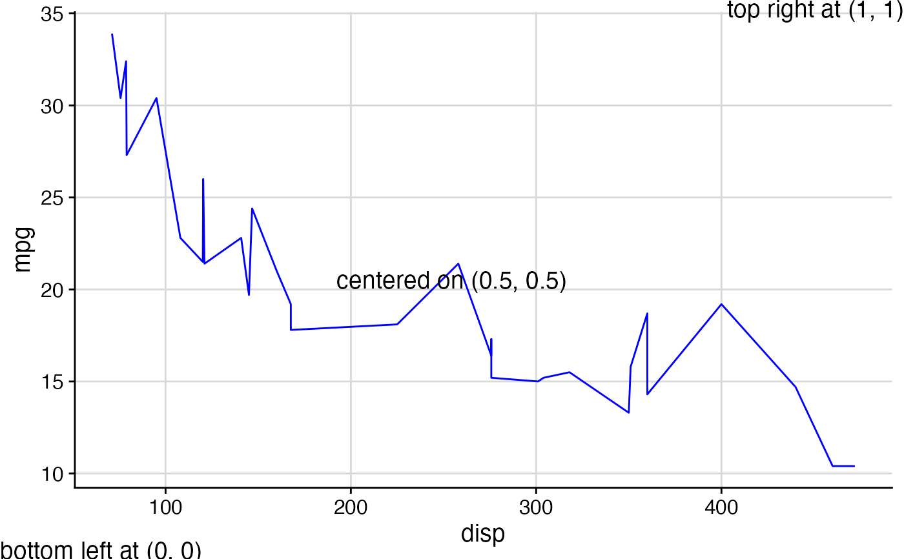

This function can draw either a character string or mathematical expression at the given
coordinates. It works both on top of ggdraw and directly with ggplot, depending
on which coordinate system is desired (see examples).
draw_label(label, x = 0.5, y = 0.5, hjust = 0.5, vjust = 0.5, fontfamily = "", fontface = "plain", color = "black", size = 14, angle = 0, lineheight = 0.9, alpha = 1, colour)
| label | String or plotmath expression to be drawn. |
|---|---|
| x | The x location (origin) of the label. |
| y | The y location (origin) of the label. |
| hjust | Horizontal justification. Default = 0.5 (centered on x). 0 = flush-left at x, 1 = flush-right. |
| vjust | Vertical justification. Default = 0.5 (centered on y). 0 = baseline at y, 1 = ascender at y. |
| fontfamily | The font family |
| fontface | The font face ("plain", "bold", etc.) |
| color, colour | Text color |
| size | Point size of text |
| angle | Angle at which text is drawn |
| lineheight | Line height of text |
| alpha | The alpha value of the text |
By default, the x and y coordinates specify the center of the text box. Set hjust = 0, vjust = 0 to specify
the lower left corner, and other values of hjust and vjust for any other relative location you want to
specify.
library(ggplot2) # setup plot and a label (regression description) p <- ggplot(mtcars, aes(disp, mpg)) + geom_line(color = "blue") + theme_half_open() + background_grid(minor = 'none') out <- cor.test(mtcars$disp, mtcars$mpg, method = 'sp', exact = FALSE) label <- substitute( paste("Spearman ", rho, " = ", estimate, ", P = ", pvalue), list(estimate = signif(out$estimate, 2), pvalue = signif(out$p.value, 2)) ) # Add label to plot, centered on {x,y} (in data coordinates) p + draw_label(label, x = 300, y = 32)# Add label to plot in data coordinates, flush-left at x, baseline at y. p + draw_label(label, x = 100, y = 30, hjust = 0, vjust = 0)# Add labels via ggdraw. Uses ggdraw coordinates. # ggdraw coordinates default to xlim = c(0, 1), ylim = c(0, 1). ggdraw(p) + draw_label("centered on 70% of x range,\n90% of y range", x = 0.7, y = 0.9)ggdraw(p) + draw_label("bottom left at (0, 0)", x = 0, y = 0, hjust = 0, vjust = 0) + draw_label("top right at (1, 1)", x = 1, y = 1, hjust = 1, vjust = 1) + draw_label("centered on (0.5, 0.5)", x = 0.5, y = 0.5, hjust = 0.5, vjust = 0.5)